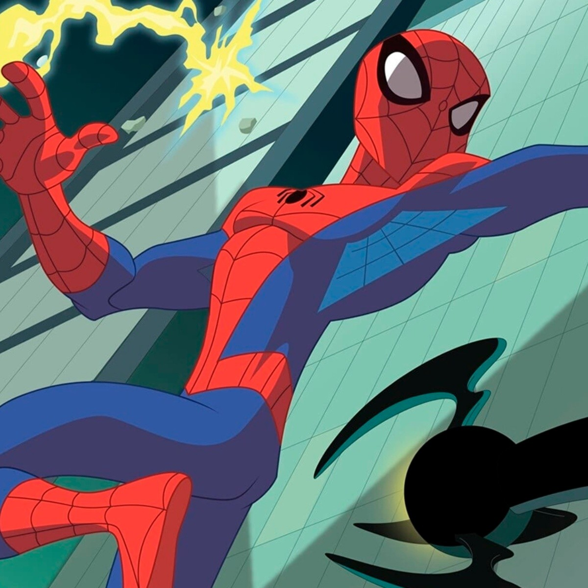

SPIDER-MAN
Spider-Man, traducido en ocasiones como Hombre Araña, es un personaje creado por los estadounidenses Stan Lee y Steve Ditko, e introducido en el cómic Amazing Fantasy n.° 15, publicado por Marvel Comics en agosto de 1962. Se trata de un superhéroe que emplea sus habilidades sobrehumanas, reminiscentes de una araña, para combatir a otros supervillanos que persiguen fines siniestros.
Su creación se remonta a principios de la década de 1960 a manera de respuesta ante el creciente interés del público adolescente en los cómics y el éxito de Los 4 Fantásticos. Tras su primera aparición en Amazing Fantasy,17 Marvel decidió producir una serie individual titulada The Amazing Spider-Man, cuyo ejemplar inicial salió a la venta en marzo de 1963. Desde entonces se han distribuido otros varios cómics relacionados con el personaje, así como otros productos que han derivado en el establecimiento de una franquicia de medios.

Si bien posee múltiples versiones alternativas que han propiciado el desarrollo de un multiverso, los orígenes y rasgos principales de Spider-Man han permanecido mayormente invariables con el transcurso del tiempo. Generalmente su identidad secreta es Peter Parker, un joven huérfano neoyorquino que adquiere superpoderes después de ser mordido por una araña radiactiva, y cuya ideología como héroe se ve reflejada primordialmente en la expresión «un gran poder conlleva una gran responsabilidad».2021 Suele ser asociado con una personalidad bromista, amable, inventiva y optimista, lo que le ha llevado a ser catalogado como el «vecino amigable» de cualquiera lo cual, aunado a sus vivencias caracterizadas por los problemas cotidianos, atrajeron el interés del público al contrastar con el arquetipo de superhéroe de la industria.
Entre sus habilidades destacan la fuerza, el combate y la inteligencia, además de ser capaz de producir y lanzar telarañas sintéticas con ayuda de unos lanzadores que van sujetos a sus muñecas; trepar, adherirse y desplazarse a través de muros y edificaciones; y percibir peligros y amenazas a su alrededor de forma precognitiva gracias a su «sentido arácnido». Algunas de sus colaboraciones con otros superhéroes incluyen a Antorcha Humana, Iron Man, Capitán América y Los Vengadores, mientras que algunos de sus rivales más recurrentes son el Duende Verde, Doctor Octopus y Venom, así como grupos delictivos como los Seis Siniestros y los Herederos.